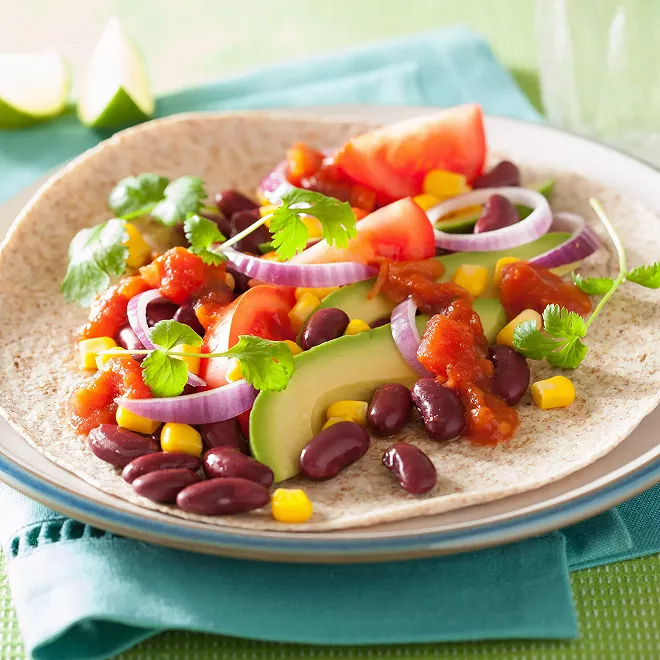

Jour 12 !
Ce soir c'est lundi, pas de prise de tête !
FAJITAS !
Préparation : 15 min
Cuisson : 0 min

Ingrédients
Tomates : 2
Oignon rouge : 1
Avocats : 2
Haricots rouges : 1 boîte
Maïs : 1 boîte
Tortillas
Persil
Sel, poivre, huile d'olive
Préparation
Voici les étapes à effectuer :
Attention, très complexe : tout mettre sur la table, et laisser les gens se débrouiller !